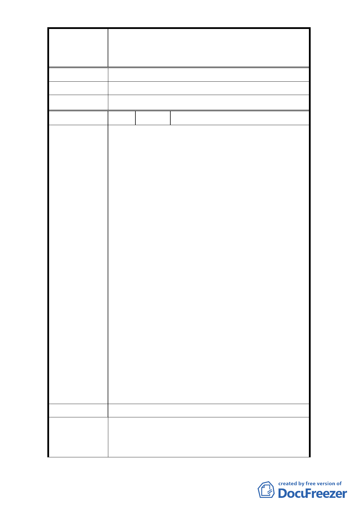

修訂臺北市大安區青田街保存區聚落風貌保存專用區細部計
案
名
畫、變更部分第三種住宅區、第三種商業區(特)為第三種住宅區
(特)(日式宿舍)及第三種商業區(特)(日式宿舍)暨劃定週邊地
區都市設計管制細部計畫案
建議辦法
市 府 回 覆 意 見 同編號 1 回復內容。
委 員 會 決 議 同編號 1 決議。
編 號 3 陳情人 黃隆正
1. 以蔣乃辛委員所舉師大日式宿舍為例，當時劃定為
保護是因為其有保護價值，不能因為師大保存不
力，且政府核發拆除執照為由，而逕行取消其周遭
建築的退縮限制。如果是，則為變相鼓勵任保護住
宅毀壞，讓保護住宅消失的目的。
2. 文化局應對本次修訂的理由詳加說明。文化局當時
作出限制，有其考量。比如色彩，其並不易因時間
而有太大改變。究竟改變色彩限制的原因如何，文
化局有必要加以公開說明。
3. 有部分居民認為，在目前限制下，部份新建築案（如
陳 情 理 由 和平長老教會）其量體已大得驚人，許多人已抱怨
其阻擋陽光日照，將來再放寬，其量體豈不是更驚
人。且當時教會的開挖率是 100%，並非限制的 60%。
此部份宜對居民說明。
4. 與會文化局股長會中的口頭說明，說如果基地願意
保護樹木，則還有容積獎勵。回想起和平教會改建
時，計畫書中於基地周邊保留榕樹，並經樹保委員
審議通過。但日前教會前榕樹已遭砍除，此突顯本
修訂第八條無意義。
5. 建議文化局宜對上述意見，在下次公開說明中詳加
說明。
建議辦法
1. 同編號 1 回復內容。
市 府 回 覆 意 見 2. 該教會係於本 96 年公告計畫案前申請建築，故無開
挖率 60%上限規範。
- 11 -